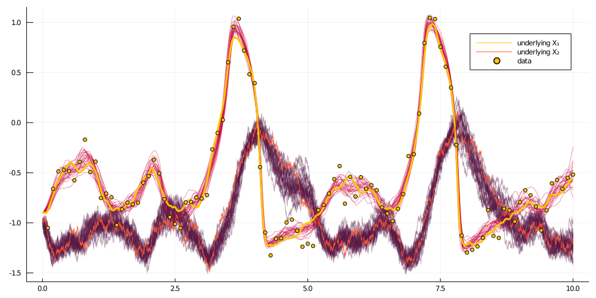
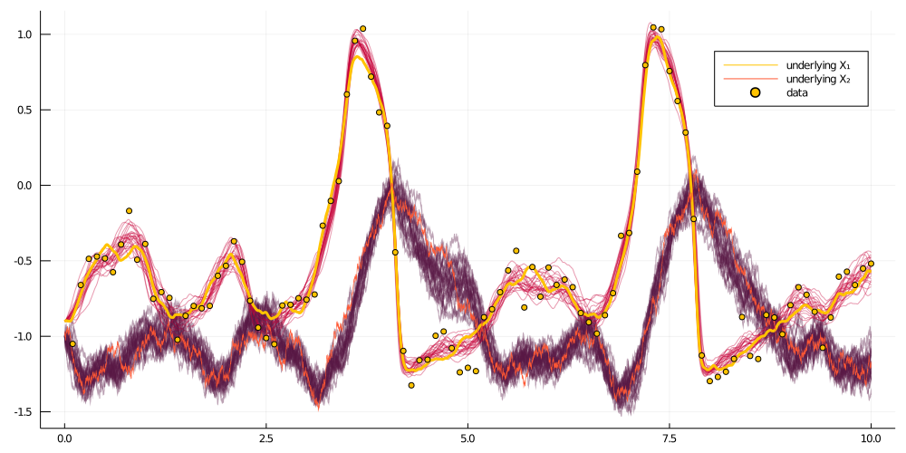

BiBlock
A composite unit that represents a block. It can be used for sampling on a block in a setting of smoothing or inference.
DiffusionMCMCTools.BiBlock — Typemutable struct BiBlock{L,TGP,TGPl,TW,TWn,TX}
b::Block{L,TGP,TGPl,TW,TWn,TX}
b°::Block{L,TGP,TGPl,TW,TWn,TX}
ρ::Float64
accpt_history::Vector{Bool}
endComposite unit that allows for sampling of a single block. It provides two Blocks: one proposal b°, one accepted b that can be used for smoothing or inference problems. ρ is a memory parameter of the preconditioned Crank-Nicolson scheme and accpt_history stores the history of accept/reject decisions (useful for MCMC).
function BiBlock(
sp::SamplingPair,
range::UnitRange{Int64},
ρ=0.0,
last_block=false,
ll_hist_len=0
)Base constructor.
There are many functions implemented for it.
Imputation of paths
DiffusionMCMCTools.draw_proposal_path! — Methoddraw_proposal_path!(bb::BiBlock)Sample a proposal path, compute log-likelihood along the way. Assumes bb.b.XX[1].x[1] is a starting point. Uses preconditioned Crank-Nicolson scheme with memory parameter set as bb.ρ.
Accept/reject decision in an MCMC setting
DiffusionMCMCTools.accept_reject_proposal_path! — Methodaccept_reject_proposal_path!(bb::BiBlock, mcmciter)Accept/reject decision of the Metropolis-Hastings algorithm for the step of path imputation.
Adjustments made after the accept-reject decision (regardless of what it was)
DiffusionMCMCTools.set_accepted! — Methodset_accepted!(bb::BiBlock, i::Int, v)Commit the accept/reject decision v to acceptance history of BiBlock b at the position i.
Adjustments to the containers in case of acceptance of proposals:
DiffusionMCMCTools.swap_paths! — Methodswap_paths!(bb::BiBlock)Swap XX and WW containers between proposal-acceptance pair.
DiffusionMCMCTools.swap_XX! — Methodswap_XX!(bb::BiBlock)Swap XX containers between proposal-acceptance pair.
DiffusionMCMCTools.swap_WW! — Methodswap_WW!(bb::BiBlock)Swap WW containers between proposal-acceptance pair.
DiffusionMCMCTools.swap_PP! — Methodswap_PP!(bb::BiBlock)Swap PP containers (including PP_last) between proposal-acceptance pair.
DiffusionMCMCTools.swap_ll! — Methodswap_ll!(bb::BiBlock)Swap ll containers between proposal-acceptance pair.
Setting up a block
GuidedProposals.set_obs! — MethodGP.set_obs!(bb::BiBlock)Freeze an artificial observation at the terminal point of the block. For a terminal block nothing is done.
GuidedProposals.recompute_guiding_term! — MethodGP.recompute_guiding_term!(bb::BiBlock)Recompute the guiding terms of both the proposal and the accepted laws.
DiffusionMCMCTools.find_W_for_X! — Methodfind_W_for_X!(bb::BiBlock)Find the Wiener process bb.b.WW that reconstructs path bb.b.XX under the accepted law bb.b.PP (possibly including bb.b.P_last).
Setting parameters
Missing docstring for DiffusionMCMCTools.set_proposal_law!( bb::DiffusionMCMCTools.BiBlock, θ°, pnames, critical_change=DiffusionMCMCTools.is_critical_update(bb, pnames), skip=0 ). Check Documenter's build log for details.
Utility
DiffusionMCMCTools.ll_of_accepted — Methodll_of_accepted(bb::BiBlock, i)Return the log-likelihood of the path that was accepted at the ith iteration.
DiffusionMCMCTools.accpt_rate — Methodaccpt_rate(bb::BiBlock, range)Compute the acceptance rate over the range of MCMC accept/reject history.
DiffusionMCMCTools.loglikhd! — Methodloglikhd!(b::BiBlock)Compute the log-likelihood for the accepted block, evaluated at a sampled path and store the result in an internal field ll.
DiffusionMCMCTools.loglikhd°! — Methodloglikhd°!(b::BiBlock)Compute the log-likelihood for the proposal block, evaluated at a sampled path and store the result in an internal field ll.
DiffusionMCMCTools.save_ll! — Methodsave_ll!(bb::BiBlock, i::Int)Commit the current proposal and accepted log-likelihood fields ll to history, at index i.
Example: smoothing with no blocking
Set-up
using GuidedProposals, DiffusionDefinition, ObservationSchemes, DiffusionMCMCTools
const GP = GuidedProposals
const DD = DiffusionDefinition
const OBS = ObservationSchemes
const dMCMCt = DiffusionMCMCTools
using StaticArrays, Random, Plots
# seed used for this tutorial
Random.seed!(100)
@load_diffusion FitzHughNagumo
θ = [0.1, -0.8, 1.5, 0.0, 0.3]
P = FitzHughNagumo(θ...)
tt, y1 = 0.0:0.0001:10.0, @SVector [-0.9, -1.0]
X = rand(P, tt, y1)
obs_scheme = ObsScheme(
LinearGsnObs(
0.0, (@SVector [0.0]);
L=(@SMatrix [1.0 0.0]),
Σ=(@SMatrix [0.01])
)
)
data = collect(obs_scheme, X, 1000)
recording = build_recording(P, data, 0.0, KnownStartingPt(y1))
plot(X, Val(:vs_time), size=(800, 300))
scatter!(map(x->x.t, data), map(x->x.obs[1], data), label="data")
The algorithm
function simple_smoothing(AuxLaw, recording, dt; ρ=0.5, num_steps=10^4)
tts = OBS.setup_time_grids(recording, dt, standard_guid_prop_time_transf)
# this object contains containers
sp = SamplingPair(AuxLaw, recording, tts)
# and this has pointers to containers and facilitates actual sampling
bb = BiBlock(sp, 1:length(recording.obs), ρ, true, num_steps)
loglikhd!(bb)
paths = []
# MCMC
for i in 1:num_steps
# impute a path
draw_proposal_path!(bb)
# Metropolis–Hastings accept/reject step
accept_reject_proposal_path!(bb, i)
# progress message
if i % 100 == 0
println(
"$i. ll=$(ll_of_accepted(bb, i)), acceptance rate: ",
"$(sum(bb.accpt_history[(i-99):i])/100)"
)
end
# save intermediate path for plotting
i % 400 == 0 && append!(paths, [deepcopy(bb.b.XX)])
end
paths
end
@load_diffusion FitzHughNagumoAux
paths = simple_smoothing(
FitzHughNagumoAux, recording, 0.001; ρ=0.96, num_steps=10^4
)Results
function glue_paths(XX)
XX_glued = trajectory(
glue_containers( map(x->x.t, XX) ),
glue_containers( map(x->x.x, XX) ),
)
end
function glue_containers(xs)
glued_xs = collect(Iterators.flatten(map(x->x[1:end-1], xs)))
append!(glued_xs, [xs[end][end]])
glued_xs
end
convenient_paths = glue_paths.(paths)
col = ["#581845", "#900C3F", "#C70039", "#FF5733", "#FFC300"]
p = plot(size=(1000, 500))
for path in convenient_paths
plot!(p, path, Val(:vs_time), alpha=0.4, label="", color=[col[3] col[1]])
end
plot!(X, Val(:vs_time), color=[col[5] col[4]], linewidth=[3 0.5], label=["underlying X₁" "underlying X₂"])
scatter!(p, map(x->x.t, data), map(x->x.obs[1], data), label="data", markercolor=col[5])
display(p)
Example: smoothing with blocking
Set-up
Same as above
The algorithm
function simple_smoothing_with_blocking(
AuxLaw, recording, dt, AuxLawBlocking, block_layout;
ρ=0.5, num_steps=10^4
)
tts = OBS.setup_time_grids(recording, dt, standard_guid_prop_time_transf)
# this object contains containers
sp = SamplingPair(AuxLaw, recording, tts)
# and this has pointers to containers and facilitates actual sampling
blocks = [
[
BiBlock(sp, br, ρ, i==length(block_ranges), num_steps)
for (i,br) in enumerate(block_ranges)
] for block_ranges in block_layout
]
paths = []
N = length(blocks)
# MCMC
for i in 1:num_steps
for B in blocks
# freeze terminal points of blocks to be artificial observations
GP.set_obs!.(B)
# recompute the guiding term only on the "accepted" laws `bb.b.PP`
(bb->recompute_guiding_term!(bb.b)).(B)
# recompute the Wiener path
find_W_for_X!.(B)
# re-evaluate the log-likelihood
loglikhd!.(B)
# impute a path
draw_proposal_path!.(B)
# Metropolis–Hastings accept/reject step
accept_reject_proposal_path!.(B, i)
# progress message
if i % 100 == 0
println(
"$i. ll=$(ll_of_accepted.(B, i)), acceptance rate: ",
"$( map(bb->accpt_rate(bb, (i-99):i), B) )"
)
end
end
# save intermediate path for plotting
i % 400 == 0 && append!(paths, [deepcopy(sp.u.XX)])
end
paths
endResults
@inline DD.nonhypo(x, P::FitzHughNagumo) = x[SVector{1,Int64}(2)]
@inline DD.nonhypo_σ(t::Float64, x, P::FitzHughNagumo) = SMatrix{1,1,Float64}(P.σ)
paths = simple_smoothing_with_blocking(
FitzHughNagumoAux, recording, 0.001, FitzHughNagumoAux,
[[1:25,26:75,76:100],[1:50, 51:100]];
ρ=0.96, num_steps=10^4
)Same plotting routines as above yield: 
Example: inference with no blocking
Set up
Same as before
The algorithm
customkernel(θ, scale=0.1) = θ .+ 2.0*scale*(rand()-0.5)
#=
NOTE: this will appear to be completely unnecessary and coming out of the
blue if you are not considering more complicated settings of mixed effect
models. Looking up ahead into the definition of ... should be helpful if
you want to understand what the function below is aiming to do.
In here, we are just creating the most basic struture that is needed for
setting parameters. It can be much more complex if blocking, multiple
updates and/or mixed effect models were used.
=#
#↓ ↓ ↓ ↓ ↓ ↓ ↓ ↓ ↓ ↓ ↓ ↓ ↓ ↓ ↓ ↓ ↓ ↓ ↓ ↓ ↓ ↓ ↓ ↓ ↓ ↓ ↓ ↓ ↓ ↓ ↓ ↓ ↓ ↓ ↓ ↓ ↓ ↓ ↓ ↓
_build_struct(N, args...) = (
var = tuple(),
var_aux = fill(tuple(), N),
updt = tuple(args...),
updt_aux = fill(tuple(args...), N),
updt_obs = fill(tuple(), N),
)
function simple_name_structure(pname::Symbol, num_obs)
pnames = (
PP = _build_struct(num_obs, (1=>pname)),
P_last = _build_struct(0), # was num_obs
P_excl = _build_struct(0),
Pb_excl = _build_struct(num_obs, (1=>pname)),
)
end
#↑ ↑ ↑ ↑ ↑ ↑ ↑ ↑ ↑ ↑ ↑ ↑ ↑ ↑ ↑ ↑ ↑ ↑ ↑ ↑ ↑ ↑ ↑ ↑ ↑ ↑ ↑ ↑ ↑ ↑ ↑ ↑ ↑ ↑ ↑ ↑ ↑ ↑ ↑ ↑
function accept_reject_proposal_param!(bb, mcmciter, θ, θ°)
accepted = rand(Exponential(1.0)) > -(bb.b°.ll - bb.b.ll)
accepted && swap_XX!(bb)
accepted && swap_PP!(bb)
save_ll!(bb, mcmciter)
accepted && swap_ll!(bb)
accepted, copy(accepted ? θ° : θ)
end
function simple_inference(AuxLaw, recording, dt, _θ; ϵ=0.3, ρ=0.5, num_steps=10^4)
# making sure that things are in order...
_pname = collect(keys(_θ))
# for simplicity restrict to inference for a single param
@assert length(_pname) == 1
pname = first(_pname)
θ = collect(values(_θ))
# setting the initial guess θ inside the recording
OBS.set_parameters!(recording, _θ)
# setting up containers
num_obs = length(recording.obs)
tts = OBS.setup_time_grids(recording, dt, standard_guid_prop_time_transf)
sp = SamplingPair(AuxLaw, recording, tts)
bb = BiBlock(sp, 1:num_obs, ρ, true, num_steps)
name_struct = simple_name_structure(pname, num_obs)
loglikhd!(bb)
paths = []
θθ = [θ]
a_h = Bool[]
for i in 1:num_steps
draw_proposal_path!(bb)
accept_reject_proposal_path!(bb, i)
θ° = customkernel(θ, ϵ)
set_proposal_law!(bb, θ°, name_struct, true)
accpt, θ = accept_reject_proposal_param!(bb, i, θ, θ°)
push!(θθ, θ)
push!(a_h, accpt)
# progress message
if i % 100 == 0
println(
"$i. ll=$(ll_of_accepted(bb, i)), ",
"imp a-r: ",
" $(accpt_rate(bb, (i-99):i)), ",
"updt a-r: ",
"$(sum(a_h[(i-99):i])/100)."
)
end
# save intermediate path for plotting
i % 400 == 0 && append!(paths, [deepcopy(sp.u.XX)])
end
paths, θθ
endResults
plot(getindex.(θθ, 1))
Example: inference with blocking
Set up
Same as before
The algorithm
#↓ ↓ ↓ ↓ ↓ ↓ ↓ ↓ ↓ ↓ ↓ ↓ ↓ ↓ ↓ ↓ ↓ ↓ ↓ ↓ ↓ ↓ ↓ ↓ ↓ ↓ ↓ ↓ ↓ ↓ ↓ ↓ ↓ ↓ ↓ ↓ ↓ ↓ ↓ ↓
function simple_name_structure_not_last(pname::Symbol, num_obs)
pnames = (
PP = _build_struct(num_obs-1, (1=>pname)),
P_last = _build_struct(1, (1=>pname)),
P_excl = _build_struct(1, (1=>pname)),
Pb_excl = _build_struct(num_obs-1, (1=>pname)),
)
end
function simple_name_structure_blocking(pname::Symbol, block_layout)
map(block_layout) do block_set
map(enumerate(block_set)) do (i, block)
(
i == length(block_set) ?
simple_name_structure(pname, length(block)) :
simple_name_structure_not_last(pname, length(block))
)
end
end
end
#↑ ↑ ↑ ↑ ↑ ↑ ↑ ↑ ↑ ↑ ↑ ↑ ↑ ↑ ↑ ↑ ↑ ↑ ↑ ↑ ↑ ↑ ↑ ↑ ↑ ↑ ↑ ↑ ↑ ↑ ↑ ↑ ↑ ↑ ↑ ↑ ↑ ↑ ↑ ↑
function accept_reject_proposal_param!(B::AbstractArray{<:BiBlock}, mcmciter, θ, θ°)
accepted = rand(Exponential(1.0)) > mapreduce(bb->-(bb.b°.ll - bb.b.ll),+,B)
accepted && swap_XX!.(B)
accepted && swap_PP!.(B)
(bb->save_ll!(bb.b, mcmciter)).(B)
(bb->save_ll!(bb.b°, mcmciter)).(B)
accepted && swap_ll!.(B)
accepted, copy(accepted ? θ° : θ)
end
function simple_inference_with_blocking(
AuxLaw, recording, dt, AuxLawBlocking, block_layout, _θ;
ϵ=0.3, ρ=0.5, num_steps=10^4
)
# making sure that things are in order...
_pname = collect(keys(_θ))
# for simplicity restrict to inference for a single param
@assert length(_pname) == 1
pname = first(_pname)
θ = collect(values(_θ))
# setting the initial guess θ inside the recording
OBS.set_parameters!(recording, _θ)
# setting up containers
tts = OBS.setup_time_grids(recording, dt, standard_guid_prop_time_transf)
sp = SamplingPair(AuxLaw, recording, tts)
blocks = [
[
BiBlock(sp, br, ρ, i==length(block_ranges), num_steps)
for (i,br) in enumerate(block_ranges)
] for block_ranges in block_layout
]
name_struct = simple_name_structure_blocking(pname, block_layout)
paths = []
θθ = [θ]
a_h = Bool[]
# MCMC
for i in 1:num_steps
for B in blocks
GP.set_obs!.(B)
(bb->recompute_guiding_term!(bb.b)).(B)
find_W_for_X!.(B)
loglikhd!.(B)
draw_proposal_path!.(B)
accept_reject_proposal_path!.(B, i)
# progress message
if i % 100 == 0
println(
"$i. ll=$(ll_of_accepted.(B, i)), acceptance rate: ",
"$( map(bb->accpt_rate(bb, (i-99):i), B) )"
)
end
end
θ° = customkernel(θ, ϵ)
B = blocks[end]
for (idx, bb) in enumerate(B)
set_proposal_law!(bb, θ°, name_struct[end][idx], true)
end
(bb->recompute_guiding_term!(bb.b°)).(B)
accpt, θ = accept_reject_proposal_param!(B, i, θ, θ°)
push!(θθ, θ)
push!(a_h, accpt)
if i % 100 == 0
println(
"$i. updt a-r: ",
"$(sum(a_h[(i-99):i])/100)."
)
end
# save intermediate path for plotting
i % 400 == 0 && append!(paths, [deepcopy(sp.u.XX)])
end
paths, θθ
endThe results
using OrderedCollections
θ = OrderedDict(:γ=>1.5)
DD.var_parameter_names(::FitzHughNagumo) = (:γ,)
DD.var_parameter_names(::FitzHughNagumoAux) = (:γ,)
@load_diffusion FitzHughNagumoAux
paths, θθ = simple_inference_with_blocking(
FitzHughNagumoAux, recording, 0.001, FitzHughNagumoAux,
[[1:25,26:75,76:100],[1:50, 51:100]], θ; ϵ=0.3, ρ=0.96, num_steps=10^4
)
plot(getindex.(θθ, 1))
As you can see above, BiBlock is the fundamental building block that is used for creating inference and smoothing algorithms. However, as the complexity of these algorithms grow it is useful to use some macro structures that operate on or are defined for multiple BiBlocks. This is precisely what the remaining tools defined in this package are for. Otherwise put, they aim to facilitate writing snippets of code as above in a much more compact and convenient way.